Data Visualisation
Adam H. Sparks
2022-04-24
Source:vignettes/d_visualisation.Rmd
d_visualisation.RmdThis vignette documents a simple visualisation and tabulation of the data gathered from surveying 21 journals and 300 articles in the field of plant pathology for their openness and reproducibility.
Set-up Workspace
Load libraries used and setting the ggplot2 theme for the document.
library("tidyverse")
#> ── Attaching packages ─────────────────────────────────────── tidyverse 1.3.1 ──
#> ✓ ggplot2 3.3.5 ✓ purrr 0.3.4
#> ✓ tibble 3.1.6 ✓ dplyr 1.0.8
#> ✓ tidyr 1.2.0 ✓ stringr 1.4.0
#> ✓ readr 2.1.2 ✓ forcats 0.5.1
#> ── Conflicts ────────────────────────────────────────── tidyverse_conflicts() ──
#> x dplyr::filter() masks stats::filter()
#> x dplyr::lag() masks stats::lag()
library("janitor")
#>
#> Attaching package: 'janitor'
#> The following objects are masked from 'package:stats':
#>
#> chisq.test, fisher.test
library("pander")
library("Reproducibility.in.Plant.Pathology")
library("ggplot2")
theme_set(theme_classic())Import the data and calculate the reproducibility score
rrpp <- import_notes()Reproducibility score
The reproducibility score was calculated as the sum of the scores for computational method availability for the total available scores. That is, if a paper did not require specialised software but deposited and reported all data the score was 100%, the same as for another article that cited and used all open source software and deposited code and data.
ggplot(rrpp, aes(x = reproducibility_score)) +
geom_density() +
ggtitle("Reproducibility Score") +
xlab("Score (%)")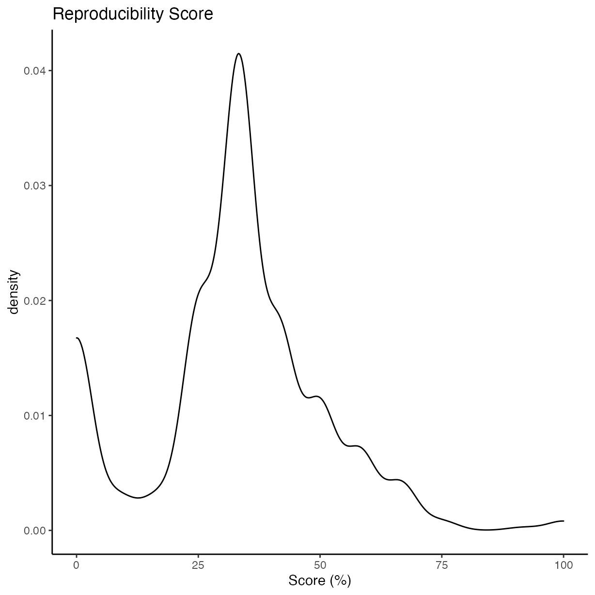
Evaluator effect on reproducibility score
Have a look at whether evaluators had an effect on the scores assigned.
ggplot(rrpp, aes(y = reproducibility_score,
x = assignee)) +
geom_count() +
stat_summary(
fun = median,
fun.min = median,
fun.max = median,
geom = "crossbar",
width = 0.5
) +
ggtitle("Evaluator Effect") +
ylab("Reproducibility Score (%)") +
xlab("Evaluator") +
labs(caption = "Crossbar indicates median reproducibility score value.")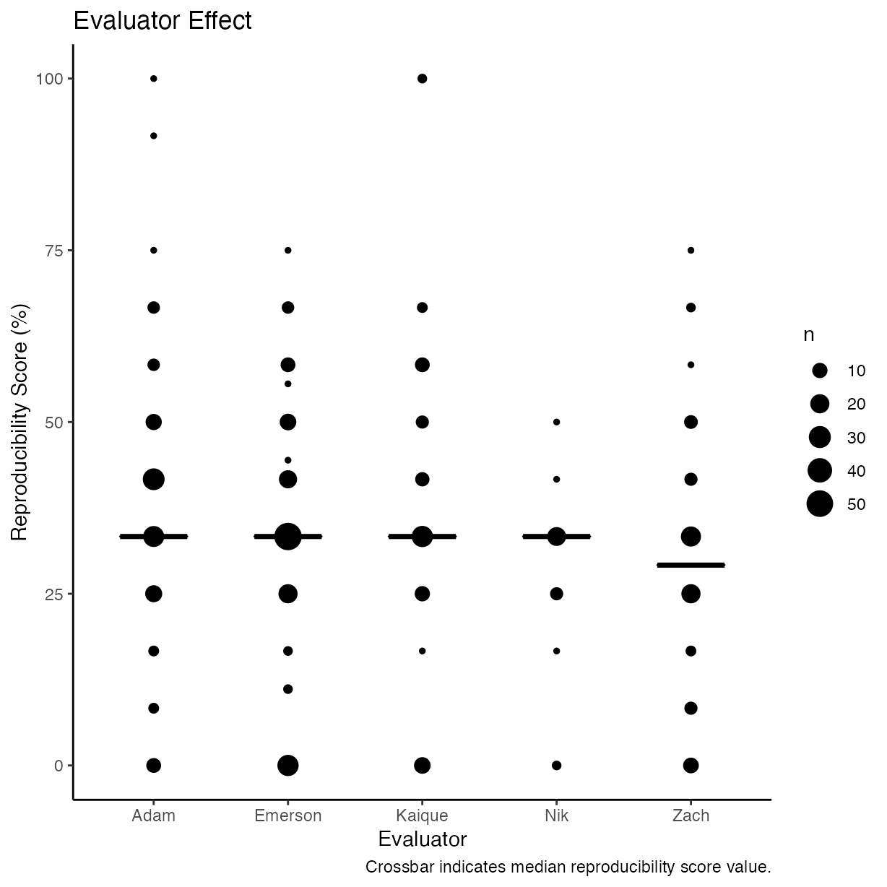
Visualise evaluations
Computational methods available
Were the computational methods, scripts, source code, etc., made available?
ggplot(rrpp, aes(y = as.factor(comp_mthds_avail))) +
geom_bar() +
ggtitle("Computational Methods Availability") +
ylab("Score") +
labs(caption = "NA means that no computational methods were used to generate the data,\ne.g. only PCR results reported with no statistical analysis")
Software availability
Were the software used readily available and preferably open-source?
ggplot(rrpp, aes(y = software_avail)) +
geom_bar() +
ggtitle("Software Availability") +
ylab("Score")
#> Warning: Removed 13 rows containing non-finite values (stat_count).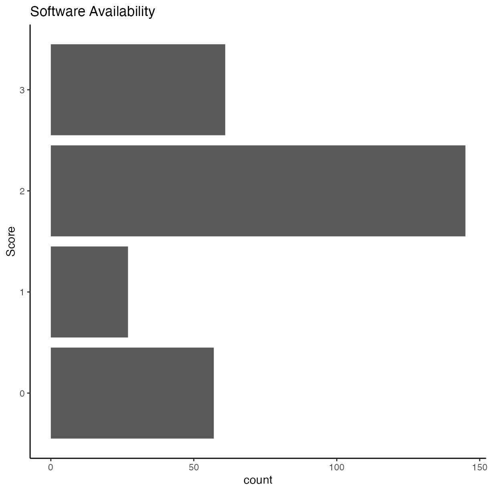
Software citations
Were the software that was used properly cited?
ggplot(rrpp, aes(y = software_cite)) +
geom_bar() +
ggtitle("Software Cited") +
ylab("Score")
#> Warning: Removed 11 rows containing non-finite values (stat_count).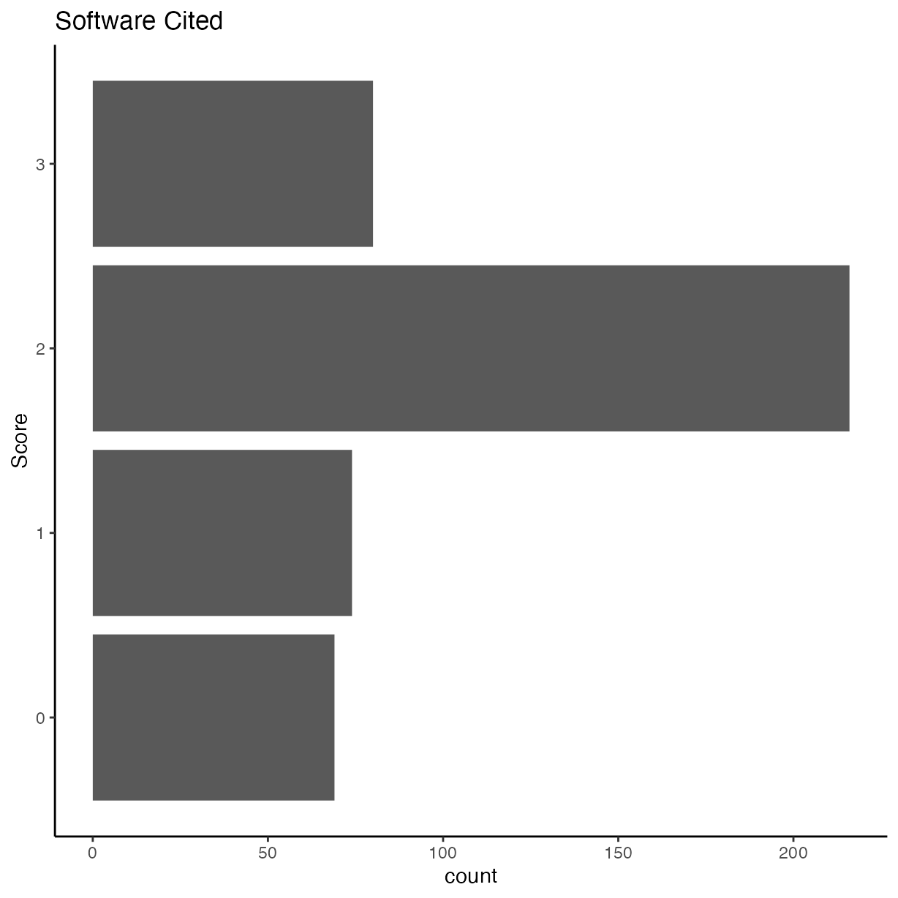
Software used (cited)
Count and sort top 10 software packages cited. There are likely others that are used, but they have not been properly cited or listed by the authors.
First create a tidy data frame of the data by unnesting software used as in many cases multiple software packages were used, so will end up with multiple rows for same article, one for each software.
rrpp_software <-
rrpp %>%
transform(software_used = strsplit(software_used, ",")) %>%
unnest(software_used) %>%
mutate(software_used = trimws(software_used)) %>%
mutate(software_used = toupper(software_used)) # convert all to uppercase to standardiseNow graph the top ten software packages used.
tab <- table(rrpp_software$software_used)
tab_s <- sort(tab)
top10 <-
tail(names(tab_s), 14) # checking the table, there are several ties
top_software <- subset(rrpp_software, software_used %in% top10)
top_software$software_used <- factor(top_software$software_used,
levels = rev(top10))
ggplot(top_software, aes(y = software_used)) +
geom_bar() +
ggtitle("Top 10 Software Used") +
xlab("Count") +
ylab("Software")
Data availability
Were the data made readily available?
ggplot(rrpp, aes(y = data_avail)) +
geom_bar() +
ggtitle("Data Availability") +
ylab("Score")
#> Warning: Removed 2 rows containing non-finite values (stat_count).
Article class effect on reproducibility score
ggplot(rrpp, aes(y = reproducibility_score,
x = art_class)) +
geom_count() +
stat_summary(
fun = median,
fun.min = median,
fun.max = median,
geom = "crossbar",
width = 0.5
) +
ggtitle("Article Class Effect") +
ylab("Reproducibility Score (%)") +
xlab("Class") +
labs(caption = "Crossbar indicates median reproducibility score value.")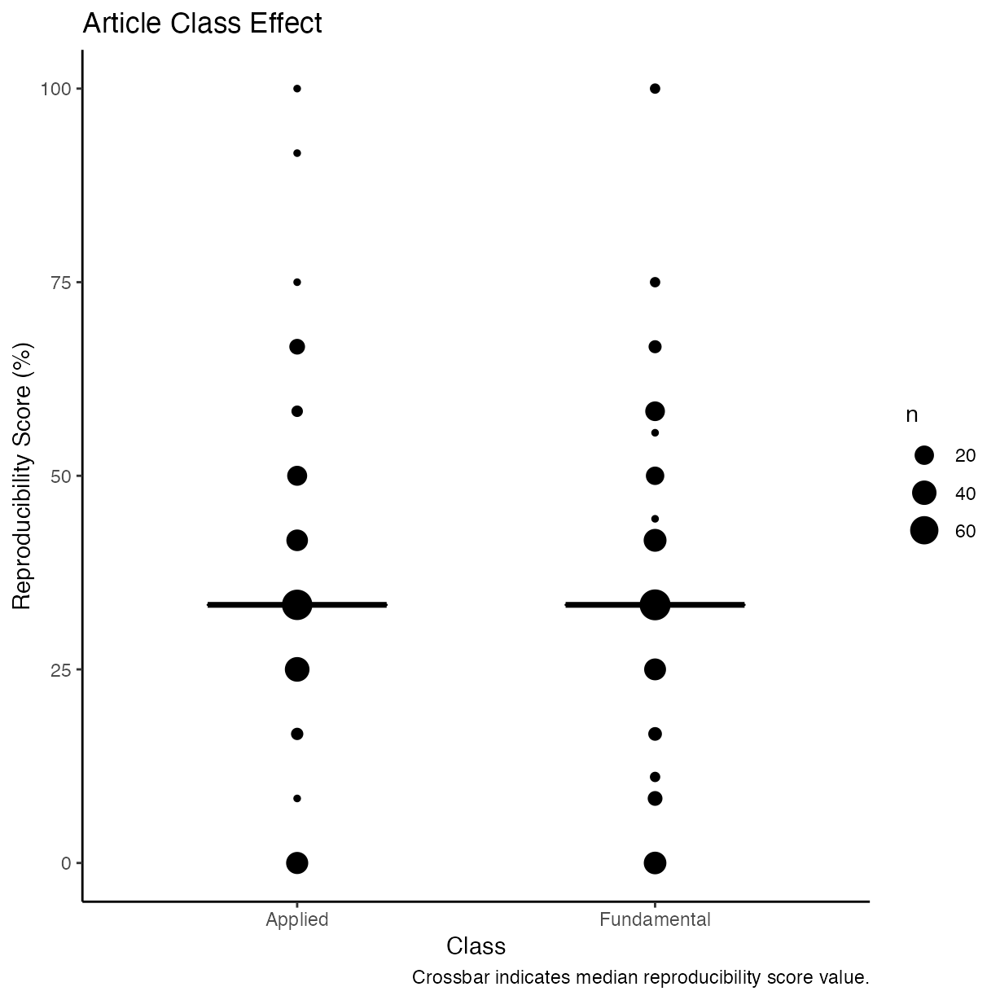
Journal effect on reproducibility score
ggplot(rrpp, aes(x = reproducibility_score,
y = abbreviation)) +
geom_count() +
ggtitle("Journal Effect") +
ylab("Journal") +
xlab("Score")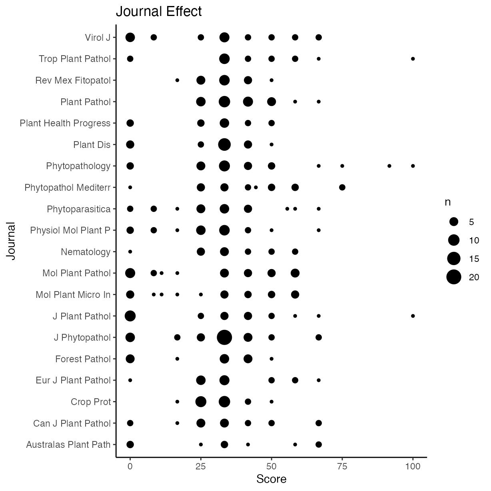
Five year impact factor effect on reproducibility score
ggplot(rrpp, aes(y = reproducibility_score,
x = IF_5year)) +
geom_count() +
geom_smooth() +
ggtitle("Five Year IF Effect") +
ylab("Score") +
xlab("Impact Factor")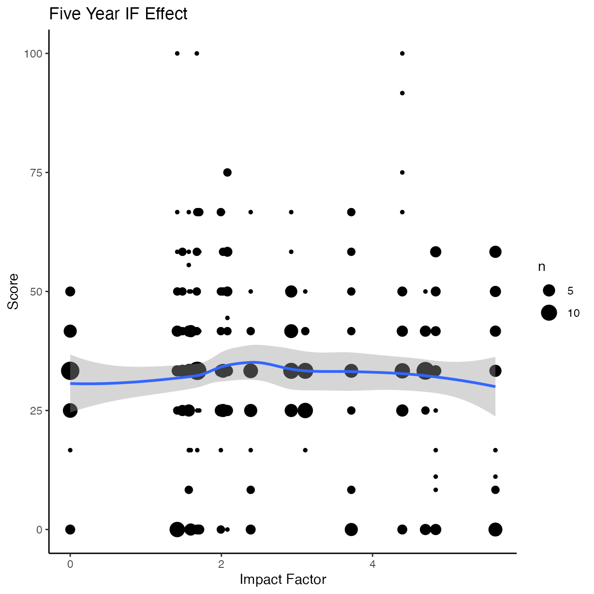
Journal open access effect on reproducibility score
ggplot(rrpp, aes(y = reproducibility_score,
x = as.factor(open))) +
geom_count() +
stat_summary(
fun = median,
fun.min = median,
fun.max = median,
geom = "crossbar",
width = 0.5
) +
ggtitle("Journal Open Access Classification Effect") +
ylab("Score") +
xlab("Open Access Classification") +
labs(caption = "Crossbar indicates median score value.")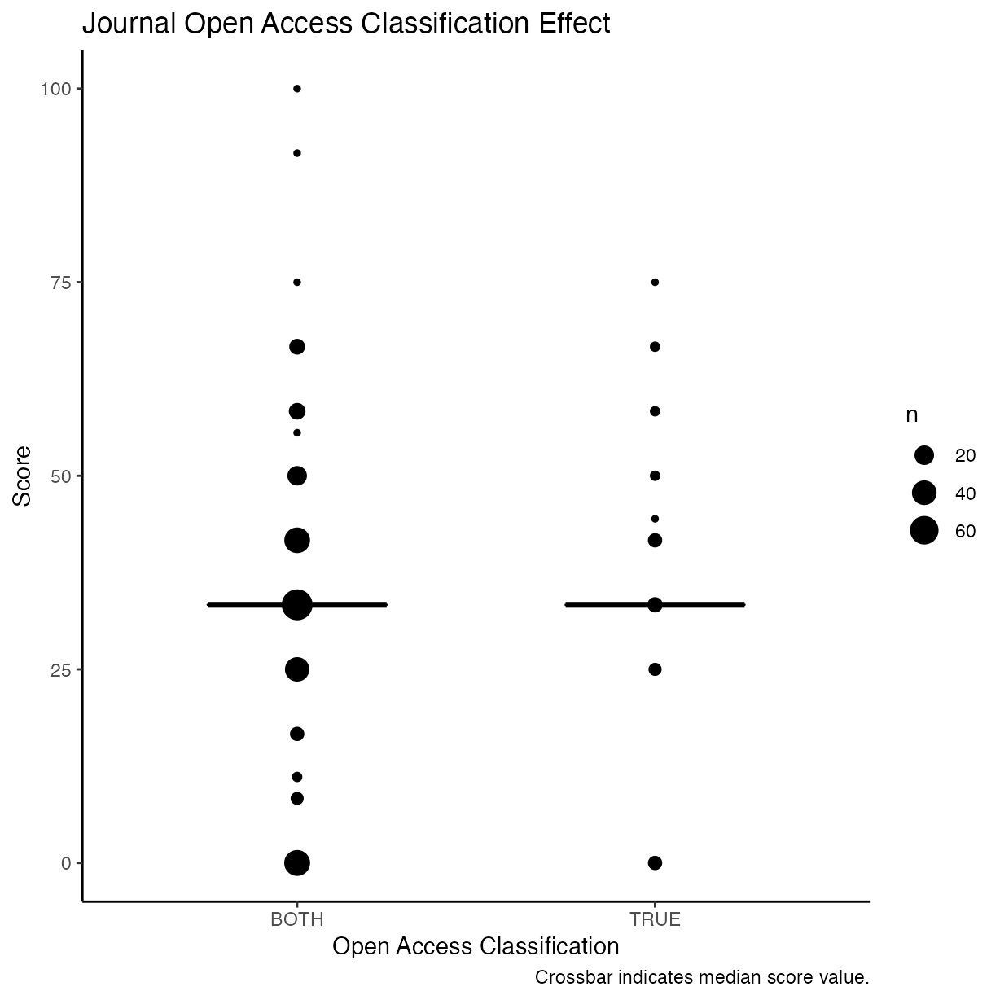
Journal reproducibility instructions effect on reproducibility score
ggplot(rrpp, aes(y = reproducibility_score,
x = as.factor(repro_inst))) +
geom_count() +
stat_summary(
fun = median,
fun.min = median,
fun.max = median,
geom = "crossbar",
width = 0.5
) +
ggtitle("Reproducibility Instructions Effect") +
ylab("Reproducibility Score (%)") +
xlab("Reproducibility Instructions Score") +
labs(caption = "Crossbar indicates median score value.")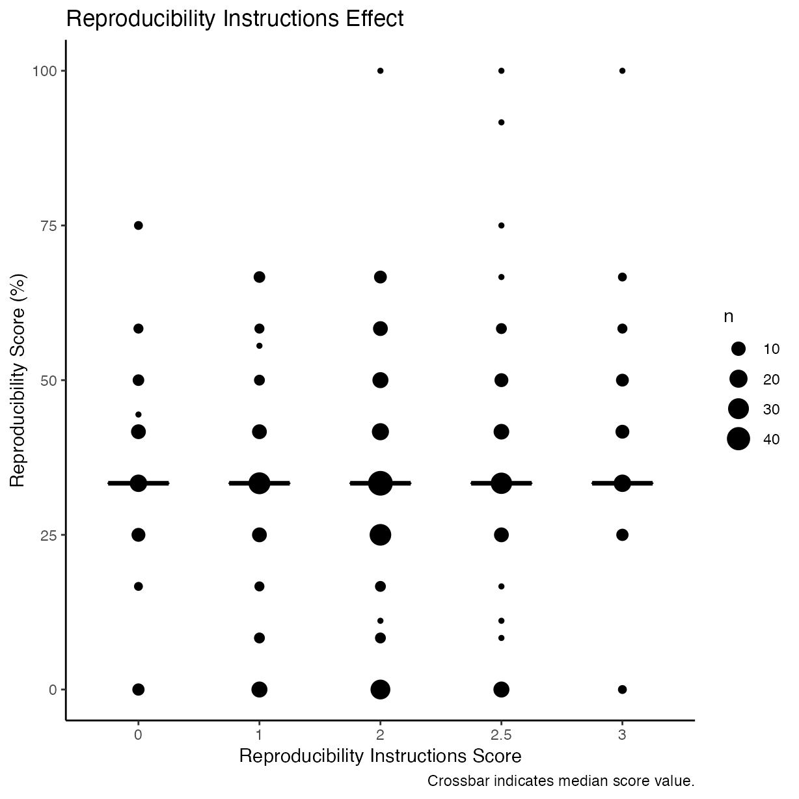
Full reproducibility score
ggplot(rrpp, aes(y = reproducibility_score,
x = year)) +
geom_count() +
geom_smooth() +
stat_summary(
fun = median,
fun.min = median,
fun.max = median,
geom = "crossbar",
width = 0.5
) +
ylab("Reproducibility Score (%)") +
xlab("Year") +
labs(caption = "Crossbar indicates median score value.")
Computational methods score
ggplot(rrpp, aes(y = comp_mthds_avail,
x = year)) +
geom_count() +
geom_smooth() +
stat_summary(
fun = median,
fun.min = median,
fun.max = median,
geom = "crossbar",
width = 0.5
) +
ylab("Computational Methods Availability") +
xlab("Year") +
labs(caption = "Crossbar indicates median score value.")
#> Warning: Removed 10 rows containing non-finite values (stat_sum).
#> Warning: Removed 10 rows containing non-finite values (stat_smooth).
#> Warning: Removed 10 rows containing non-finite values (stat_summary).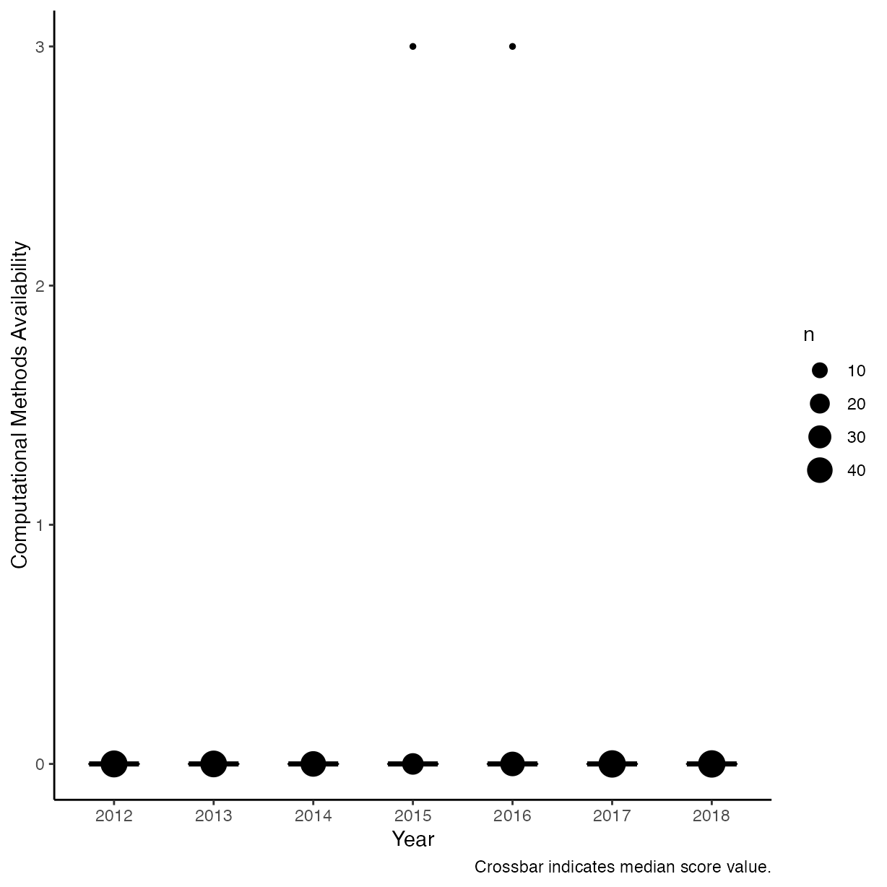
Software availability
ggplot(rrpp, aes(y = software_avail,
x = year)) +
geom_count() +
geom_smooth() +
stat_summary(
fun = median,
fun.min = median,
fun.max = median,
geom = "crossbar",
width = 0.5
) +
ylab("Software Availability") +
xlab("Year") +
labs(caption = "Crossbar indicates median score value.")
#> Warning: Removed 13 rows containing non-finite values (stat_sum).
#> Warning: Removed 13 rows containing non-finite values (stat_smooth).
#> Warning: Removed 13 rows containing non-finite values (stat_summary).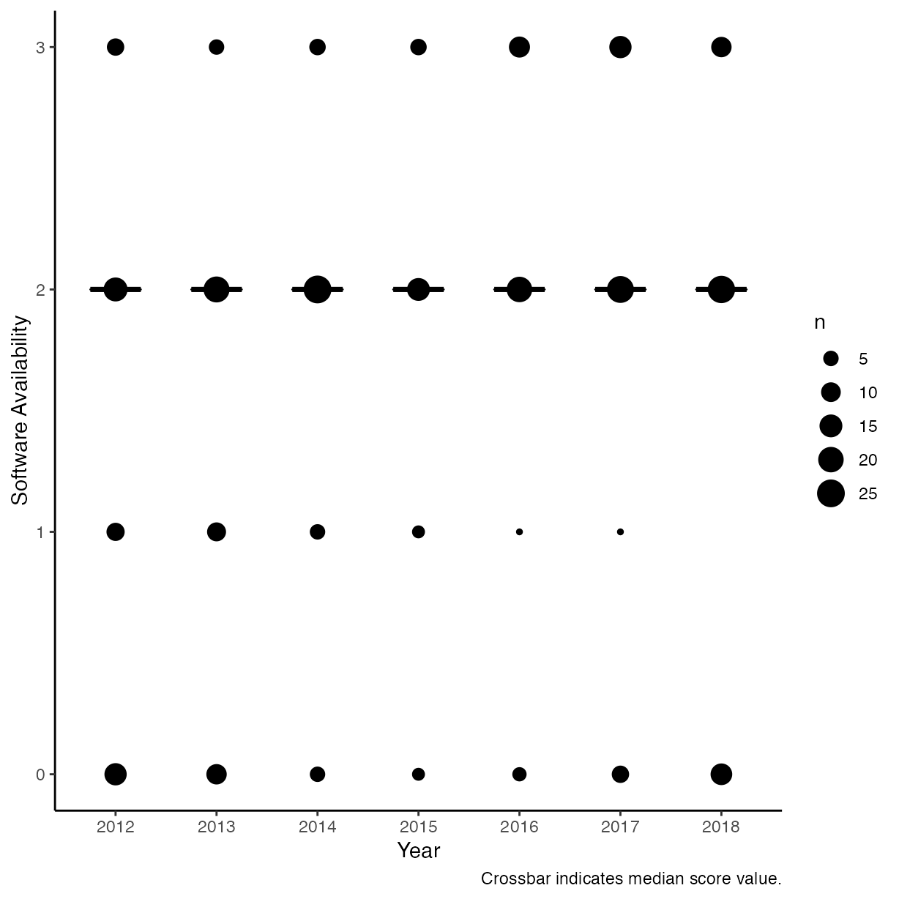
Data availability
ggplot(rrpp, aes(y = data_avail,
x = year)) +
geom_count() +
geom_smooth() +
stat_summary(
fun = median,
fun.min = median,
fun.max = median,
geom = "crossbar",
width = 0.5
) +
ylab("Data Availability") +
xlab("Year") +
labs(caption = "Crossbar indicates median score value.")
#> Warning: Removed 2 rows containing non-finite values (stat_sum).
#> Warning: Removed 2 rows containing non-finite values (stat_smooth).
#> Warning: Removed 2 rows containing non-finite values (stat_summary).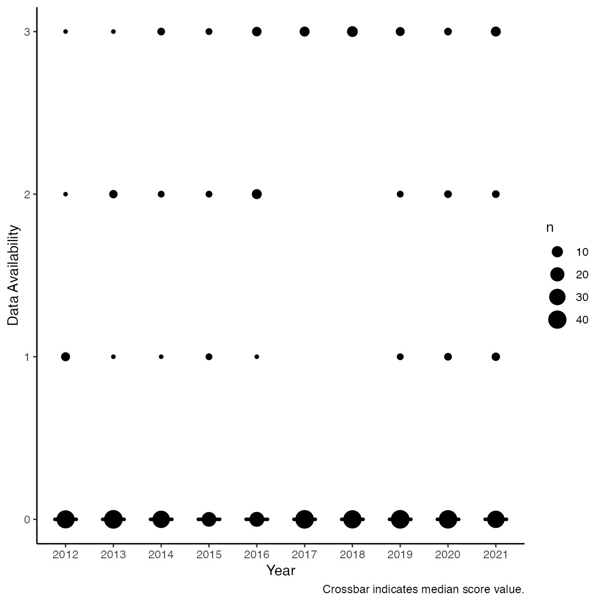
Tables
Table of journals surveyed
rrpp_journals <- tabyl(rrpp, journal)[, -3]
names(rrpp_journals) <- c("Journal", "n")
pander(rrpp_journals)| Journal | n |
|---|---|
| Australasian Plant Pathology | 11 |
| Canadian Journal of Plant Pathology | 19 |
| Crop Protection | 23 |
| European Journal of Plant Pathology | 19 |
| Forest Pathology | 18 |
| Journal of General Plant Pathology | 24 |
| Journal of Phytopathology | 19 |
| Journal of Plant Pathology | 23 |
| Molecular Plant Pathology | 29 |
| Molecular Plant-Microbe Interactions | 22 |
| Nematology | 16 |
| Physiological and Molecular Plant Pathology | 24 |
| Phytoparasitica | 23 |
| Phytopathologia Mediterranea | 20 |
| Phytopathology | 28 |
| Plant Disease | 24 |
| Plant Health Progress | 16 |
| Plant Pathology | 30 |
| Revista Mexicana de Fitopatología | 19 |
| Tropical Plant Pathology | 18 |
| Virology Journal (Plant Viruses Section) | 25 |
Table of article scores
article_scores <- tabyl(rrpp, reproducibility_score)
names(article_scores) <- c("Score", "n", "Percent")
article_scores$Percent <- round(article_scores$Percent * 100, 1)
pander(article_scores)| Score | n | Percent |
|---|---|---|
| 0 | 62 | 13.8 |
| 8.333 | 9 | 2 |
| 11.11 | 2 | 0.4 |
| 16.67 | 10 | 2.2 |
| 25 | 70 | 15.6 |
| 33.33 | 149 | 33.1 |
| 41.67 | 61 | 13.6 |
| 44.44 | 1 | 0.2 |
| 50 | 39 | 8.7 |
| 55.56 | 1 | 0.2 |
| 58.33 | 24 | 5.3 |
| 66.67 | 15 | 3.3 |
| 75 | 3 | 0.7 |
| 91.67 | 1 | 0.2 |
| 100 | 3 | 0.7 |